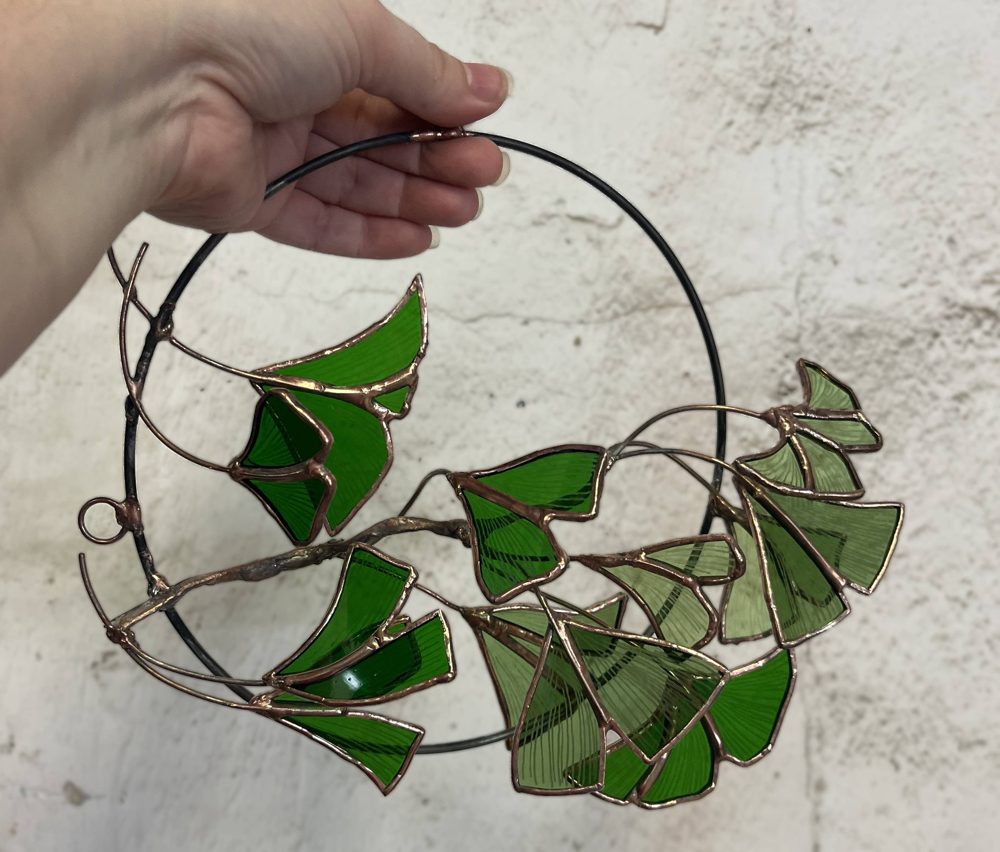
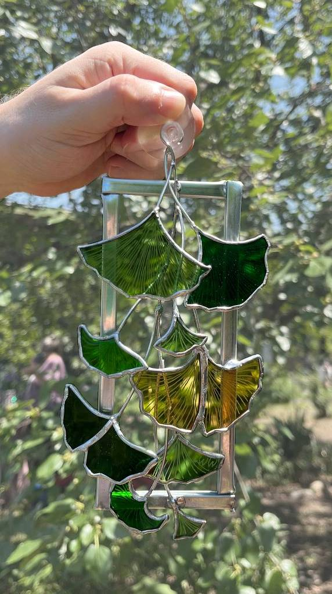
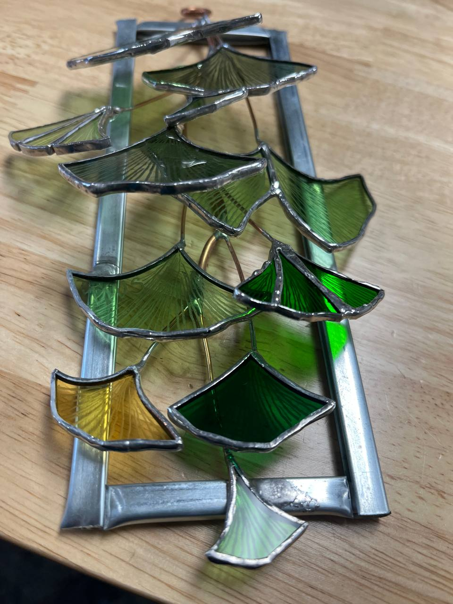
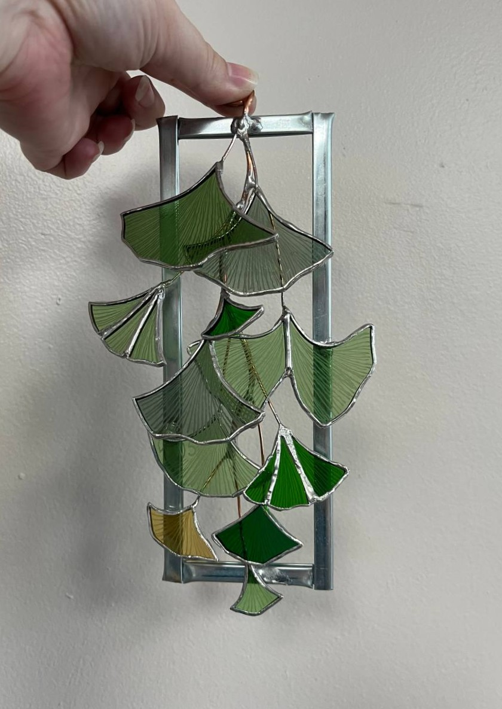
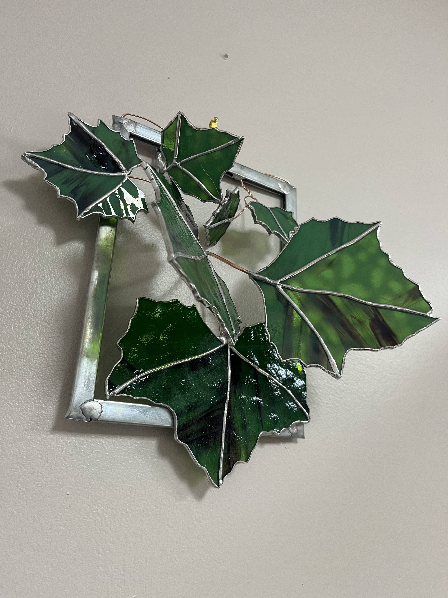
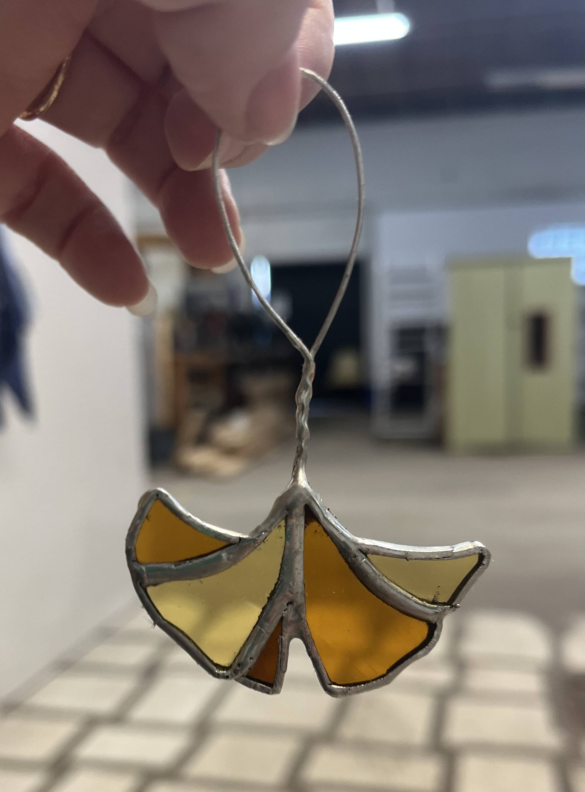

Komorebi (木漏れ日), a Japanese word literally meaning 'sunlight leaking through trees,' is an experimental body of tree branches rendered in sculptural stained glass and copper wire work. I shape and construct gingko leaves through an intutive process using reclaimed offcut glass from a previous artisan's work. I etch the delicate flowing veins by hand and attach each leaf to a copper wire armature passing through a frame. The leaves, not perfectly vertical as in panel work, stretch toward the viewer and angle toward the light, recreating the beauty of komorebi within the home.
Available at shows this autumn and by commission. Get in touch.





